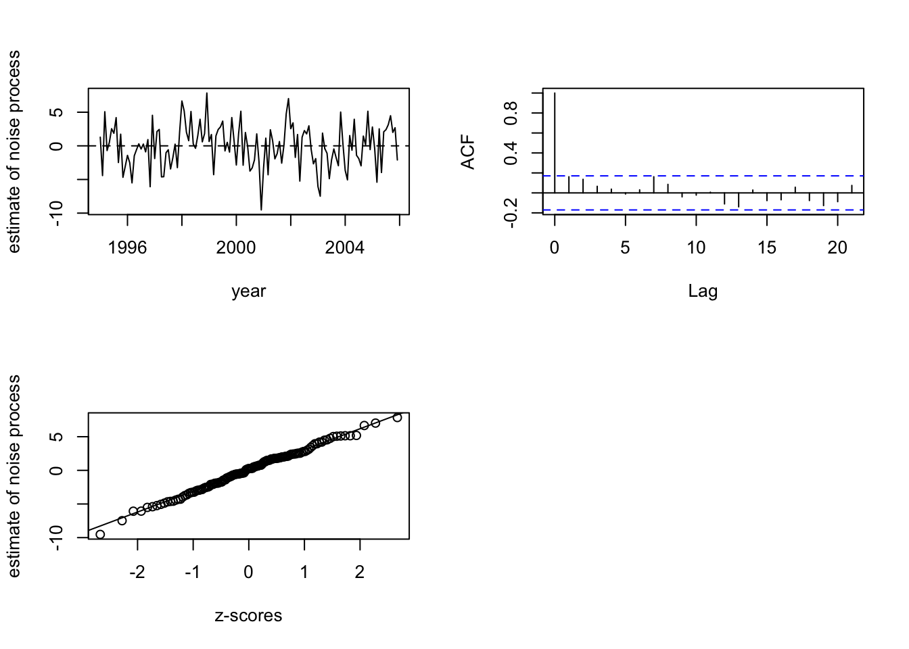

temp <-
c(29.9, 28.1, 44.3, 50.6, 61.0, 72.4, 75.6, 76.9, 63.6, 55.7, 38.1, 29.2,
27.9, 30.7, 34.4, 50.5, 60.6, 70.8, 73.9, 73.6, 65.8, 55.5, 37.3, 37.4,
28.0, 35.9, 42.9, 47.9, 57.1, 70.0, 74.3, 70.4, 65.4, 55.3, 40.6, 35.4,
37.0, 39.4, 42.9, 53.7, 67.2, 71.7, 74.9, 75.7, 71.5, 56.0, 46.0, 41.5,
31.3, 36.2, 36.9, 54.7, 64.8, 74.5, 79.2, 73.7, 68.3, 54.7, 48.6, 34.6,
28.0, 36.5, 46.5, 50.5, 64.5, 71.7, 71.9, 71.3, 65.8, 57.5, 42.1, 24.4,
27.6, 35.9, 37.1, 55.8, 63.3, 69.9, 74.5, 75.2, 65.3, 55.8, 49.2, 40.9,
33.4, 38.1, 39.6, 55.0, 57.2, 73.0, 77.8, 76.2, 70.7, 55.0, 41.6, 31.8,
24.6, 27.0, 43.0, 52.7, 61.1, 66.6, 73.2, 73.7, 65.7, 52.3, 49.0, 33.7,
26.7, 29.1, 42.3, 52.1, 65.8, 69.7, 73.0, 70.8, 68.5, 55.0, 48.7, 32.4,
32.7, 33.3, 34.9, 54.8, 57.4, 72.7, 76.8, 76.4, 71.0, 56.3, 45.7, 30.3)
year <- seq(from=1995, by=1/12, length=length(temp))
## seasonal component carried over from the Deseasoning task
d <- 12
n <- length(temp)
our.filter <- c(0.5, rep(1,d-1), 0.5)/d
longer.temp <- c(temp[(d/2):1], temp, temp[n:(n-d/2+1)])
temp.MA <- filter(longer.temp, our.filter)[(d/2+1):(d/2+n)]
temp.matrix <- matrix(temp - temp.MA, nrow=d)
s.hat <- rowMeans(temp.matrix) - mean(rowMeans(temp.matrix))
deseasonalized <- temp - s.hat
## fit a quadratic trend to the deseasonalized data and take residuals
lm.deseasonalized <- lm(deseasonalized ~ year + I(year^2))
resids <- resid(lm.deseasonalized)Check Assumptions
Time Series
Diagnostics
Verify a decomposed series’ residuals are stationary, IID, and normal.
NoteIntroduction
After detrending and deseasonalizing, check that the residual (noise) process looks stationary, IID, and normal.
This continues the Columbus monthly temperature decomposition from the Deseasoning task.
par(mfrow=c(2, 2))
## Plot the residual series with a horizontal line at y=0.
plot(year, resids, type="l", xlab="year", ylab="estimate of noise process")
abline(h=0, lty=2)
## plot the acf
acf(resids, main="")
## carry out the Ljung-Box test
Box.test(resids, 22, type="Ljung-Box")
Box-Ljung test
data: resids
X-squared = 25.455, df = 22, p-value = 0.2758## draw a Q-Q plot of the residuals.
qqnorm(resids, xlab="z-scores", ylab="estimate of noise process", main="")
qqline(resids)
The residual series shows no remaining trend or seasonality; the Ljung-Box test fails to reject IID noise (p ≈ 0.28); and the Q-Q plot supports normality.